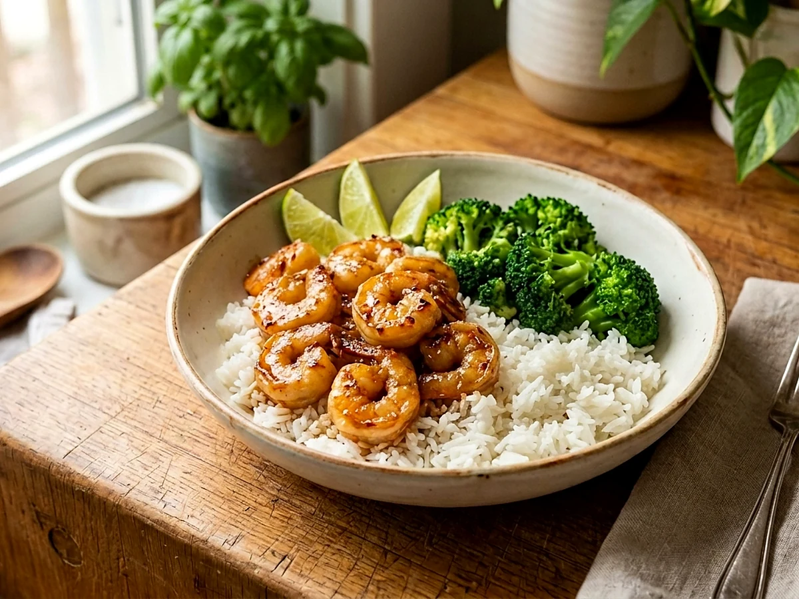

Honey Garlic Lime Shrimpwith Rice & Broccoli
Sweet, bright shrimp with jasmine rice and broccoli. The sauce comes together while the rice cooks, and the shrimp needs only a few minutes in the pan.

Watch the recipe
Cook it with Jadon.
Play the video here, then keep the measured ingredient list and full method open beside you while you cook.
Open on YouTube ↗Cook in this order
Method
- Cook the rinsed jasmine rice with 2¼ cups water in a rice cooker or according to the package directions.
- Whisk the minced garlic, honey, lime zest, lime juice, 1 teaspoon salt, and ½ teaspoon pepper in a bowl. Set the sauce aside.
- Put the broccoli and 2 cups water in a covered skillet over medium heat. Season with garlic powder, ½ teaspoon salt, and ¼ teaspoon pepper. Steam for about 3 minutes, then drain.
- Heat the avocado oil in a large skillet over medium heat. Add the shrimp and toss for 3–4 minutes, until they begin to curl.
- Pour in the honey garlic lime sauce. Cook for another 2–3 minutes, stirring, then add the butter gradually until the sauce lightly coats the shrimp.
- Serve the shrimp and sauce over jasmine rice with the broccoli.
Food-safety checkShrimp is done when it is opaque and reaches 145°F. Remove it from the heat promptly so it stays tender.
Ready for the next one?
Browse every Jadon Cooks recipe and watch the matching video.
See all recipes